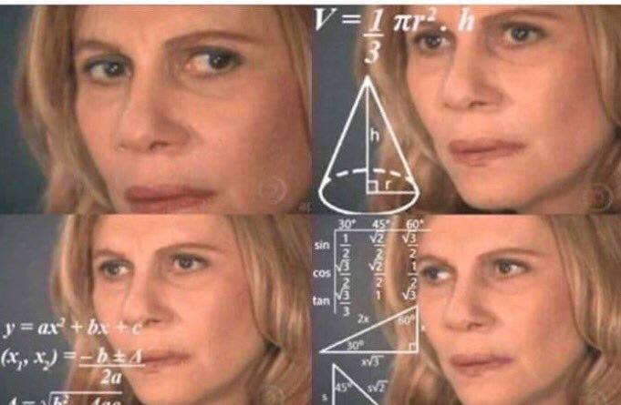

## Figure 3 (Frank 1996)
vstar <- expression(s*(delta+gamma)/(r-s))
s <- seq(0,1,length=1000)
delta <- 0.3
gamma <- 0.7
## r=0.1
r <- 0.1
vr01 <- eval(vstar)
## r=0.5
r <- 0.5
vr05 <- eval(vstar)
## r=1.0
r <- 1
vr1 <- eval(vstar)
## transmissibility is assumed to be a power function of virulence
## beta(v) = b*v^s, s \in (0,1)
plot(s[vr1>0],vr1[vr1>0], log="y", type="l", lwd=2, ylim=c(0.1,100),
xlab="Transmission Exponent (s)", ylab="Equilibrium Virulence (v*)")
lines(s[vr05>0],vr05[vr05>0], lwd=2)
lines(s[vr01>0],vr01[vr01>0], lwd=2)
text(0.17,10,"r=0.1")
text(0.53,10,"r=0.5")
text(0.98,10, "r=1.0")9 Anti-Microbial Resistance
The ecology and behavior of hosts helps establish the selective environment for pathogens.
9.1 The Crisis of Antimicrobial Resistance
Why do we have a crisis? A very real contributor to the problem relates to the economic incentives for pharmaceutical companies (Kremer and Snyder 2015).
Consider a population of 100 people, 90 of whom have a low disease risk, say 10%. The remaining ten have 100% chance of getting infected. The infection generates harm equal to the loss of $100 and both treatment pharmaceuticals or vaccines are costless to produce, administer, and are 100% effective. Assume people are risk neutral and economically rational (big assumptions, I know).
This means 19 people will get infected on average.
Low-risk population loses an expected $10 (10% chance x $100 loss). High-risk population loses $100.
Economic theory tells us that the low-risk people should be willing to pay $10 for a vaccine. Note also that the Pharma company doesn’t know a priori who is high-vs.-low risk. This means $10 x 100 = $1000 revenue.
However, economic theory also tells us that anyone infected (regardless of their subpopulation) should be willing to pay $100 to treat their disease. This means $100 x 19 = $1900.

9.2 Evolution of Virulence
Some plots from Frank (1996).
## Frank (1996) figure 4 (kind of -- it's a cross-section of his false 3d plot)
vstar1 <- expression( (gamma*tau/r)^(1/(tau+1)) )
tau <- seq(0,4, length=1000)
gamma <- 0.5
r <- 0.1
plot(tau,eval(vstar1), type="l", lwd=2,
xlab=expression(paste("Clearance Exponent (", tau, ")", sep="")),
ylab="Virulence (v*)")
r <- 0.5
lines(tau,eval(vstar1), lwd=2)
r <- 1
lines(tau,eval(vstar1), lwd=2)
text(3.5,1.98,"r=0.1")
text(3.5,1.4,"r=0.5")
text(3.5,1.21,"r=1.0")### Frank (1996) Figure 2
lambda <- 1
k <- seq(1,256, length=1000)
m <- 1.0
rrr <- expression( (k-(k-1)*((1-m)^2))^-1 )
r <- eval(rrr)
vstar <- expression( lambda*(1-r)/(lambda*(1-r) + r) )
pdf("superinfection.pdf", height=5,width=8)
plot(k, eval(vstar), type="l", lwd=2, log="x", xaxs="i", ylim=c(0,1),
xlab="Strains per Host", ylab="Virulence")
## m=0.1
m <- 0.1
r <- eval(rrr)
lines(k, eval(vstar), lwd=2)
# m=0.01
m <- 0.01
r <- eval(rrr)
lines(k, eval(vstar), lwd=2)
#locator(3)
x <- c(2.633309, 5.113474, 15.110922)
y <- c(0.73, 0.555, 0.33)
text(x[1],y[1],expression(m == 1))
text(x[2],y[2],expression(m == 0.1))
text(x[3],y[3],expression(m == 0.01))